| Consent form |
|
For explaining the procedure, risks, and benefits to the patient and getting their permission to proceed. |
| Timeout Sheet |
|
A checklist for doing timout. |
| Chucks pad |
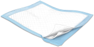 |
For setting used supplies down |
| Derm Marker |
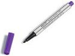 |
For marking the site of the procedure. |
| Chloraprep |
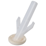 |
For cleaning the skin prior to cutting. |
| Lidocaine 1-2% with or without epinephrine (5 mL) |
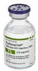 |
For numbing up the skin. With epinephrine is preferred. |
| 5 mL Syringe |
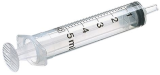 |
For injecting lidocaine. |
| 18 gauge needle |
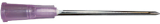 |
For drawing up lidocaine into the syringe. Do not let the patient see this needle. |
| 25 to 30 gauge needle |
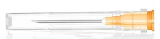 |
A small needle for injecting lidocaine. |
| x3 Sterile Gauze, 2" x 2" |
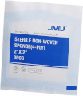 |
For bandaging the wound, holding pressure, and cleaning the wound. |
| Blade |
|
For making the incision and detaching the cyst. An 11 or 15 blade is acceptable. |
| Curved Hemostat |
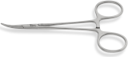 |
For blunt dissection of the cyst. |
| Saline Flush |
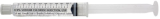 |
For flushing the cavity after cyst removal |
| Needle Driver |
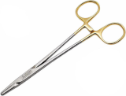 |
For grasping the needle while sewing. |
| Suture Scissors |
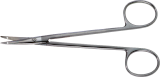 |
For cutting suture while sewing. |
| Prolene 4-0 Suture |
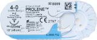 |
For closure of < 1 cm cysts. Nylon ("Ethilon") 4-0 is also acceptable |
| Alcohol Prep Pads x 2 |
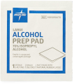 |
For cleaning off any blood after the procedure. |
| Band-Aid |
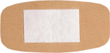 |
x 7, for covering the wound |